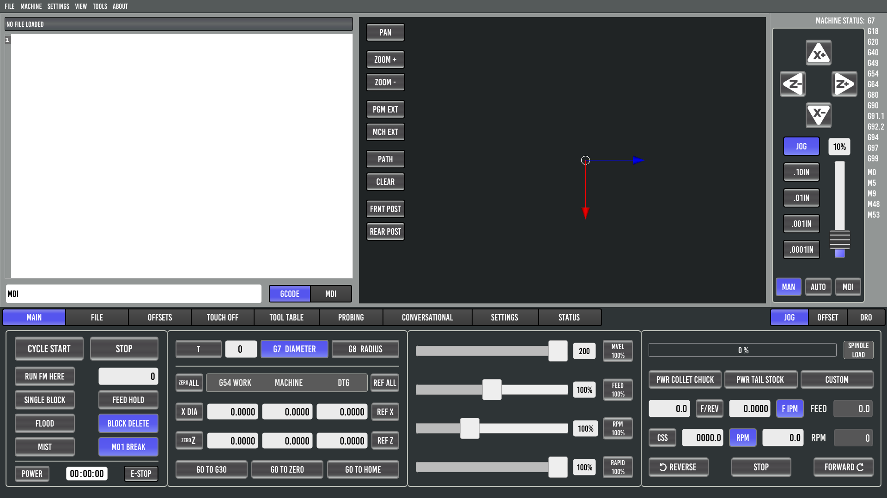
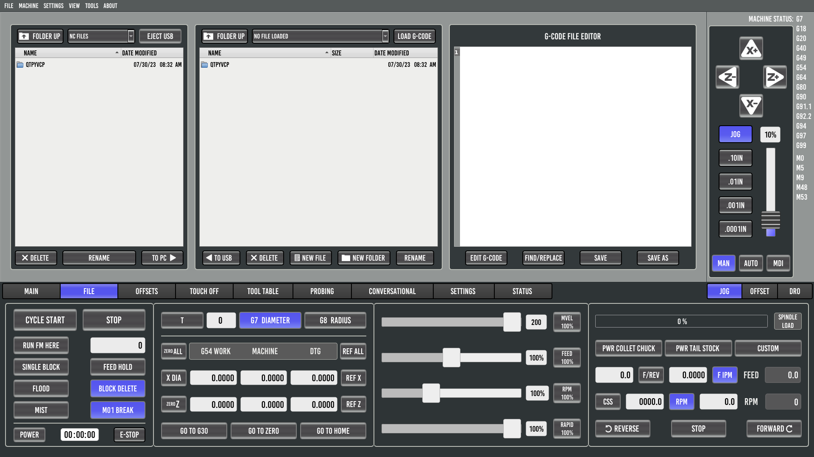

Probe Basic Lathe Interface
This page provides an overview of the Probe Basic Lathe interface tabs and their layout.
For detailed information about tool offset setup procedures and G7/G8 diameter/radius modes, see the Lathe Tool Offsets as of 0.6.5-7 Develop Version documentation.
Main
File
Offsets

The Offsets tab displays the current work coordinate system offsets. When Master Tool Offset Mode is enabled, this tab also includes the Master Tool Number field for tool promotion.
For detailed offset setup procedures, see Lathe Tool Offsets as of 0.6.5-7 Develop Version.
Touch Off

The Touch Off tab provides tool offset setup functionality with intelligent G7/G8 mode detection. Button labels automatically change between “TOUCH X DIAM” and “TOUCH X RAD” based on the active diameter/radius mode.
For step-by-step tool offset procedures, see Lathe Tool Offsets as of 0.6.5-7 Develop Version.